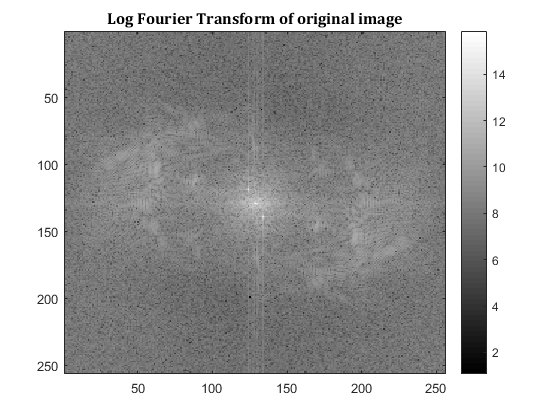
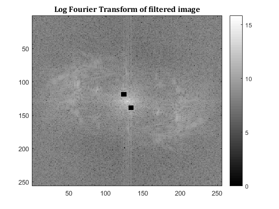
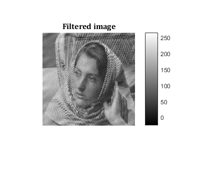
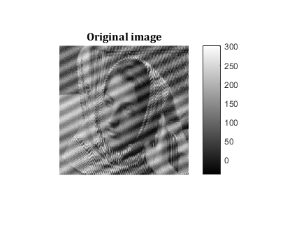

Contents
MyMainScript
clear all close all clc tic;
Your code here
img = load('../data/image_low_frequency_noise.mat');
img = img.Z;
FT = fftshift(fft2(img));
FT_plot = log(1 + abs(FT));
Designing the notch filter
The input is a barbara image with (top-right to bottom left) diagonal lines of noise added. This implies that the noise adds points to the FFT such that they would be symmetric to the main (top-right to bottom left) diagonal line. Interference frequencies at (u,v) = (-10,-5) and (10,5). Due to fftshift that corresponds to (119,124) and(139, 134)
notch_filter = ones(size(img)); notch_filter(119-3: 119+3,124-3:124+3) = 0; notch_filter(139-3:139+3,134-3:134+3) = 0; filteredFT = FT.*notch_filter; filteredFT_plot = log(1+abs(filteredFT)); % figure; % imagesc(notch_filter, [min(min(notch_filter)), max(max(notch_filter))]); colormap jet ; colorbar; figure; imagesc(FT_plot, [min(min(FT_plot)), max(max(FT_plot))]); colormap gray ; colorbar; title('Log Fourier Transform of original image', 'Fontsize', 12, 'Fontname', 'Cambria'); figure; imagesc(filteredFT_plot, [min(min(filteredFT_plot)), max(max(filteredFT_plot))]); colormap gray ; colorbar; title('Log Fourier Transform of filtered image', 'Fontsize', 12, 'Fontname', 'Cambria'); filteredimage = ifft2(ifftshift(filteredFT)); figure; imshow(filteredimage, [min(min(filteredimage)), max(max(filteredimage))]);colorbar; title('Filtered image', 'Fontsize', 12, 'Fontname', 'Cambria'); figure; imshow(img, [min(min(img)), max(max(img))]);colorbar; title('Original image', 'Fontsize', 12, 'Fontname', 'Cambria'); toc;
Elapsed time is 2.890515 seconds.   